01 · 整页入口
页面提供三个方案按钮，并保留重播、循环、黑骰状态入口。
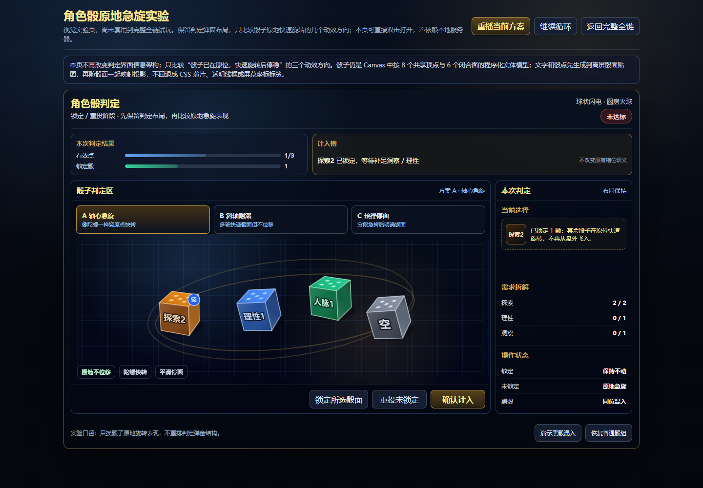
本次只修改独立视觉实验页 `dice-animation-lab.html`。目标是比较骰子留在原地快速旋转后停稳的三个方向，不改变判定弹窗布局，也不回退骰面贴图与不透明实体表现。
页面提供三个方案按钮，并保留重播、循环、黑骰状态入口。

骰子原地不位移，偏陀螺式快转，停稳较平滑。
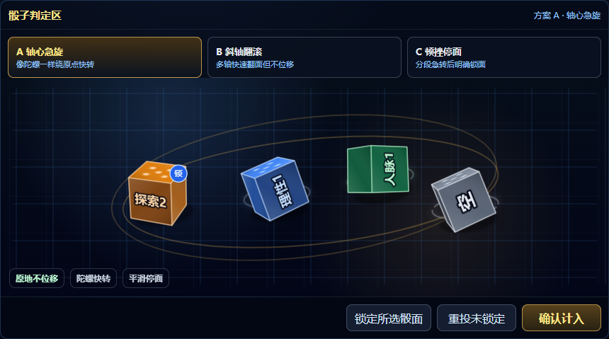
骰子原地多轴翻面，动作更像手里快速拨动骰子，带轻微压影。
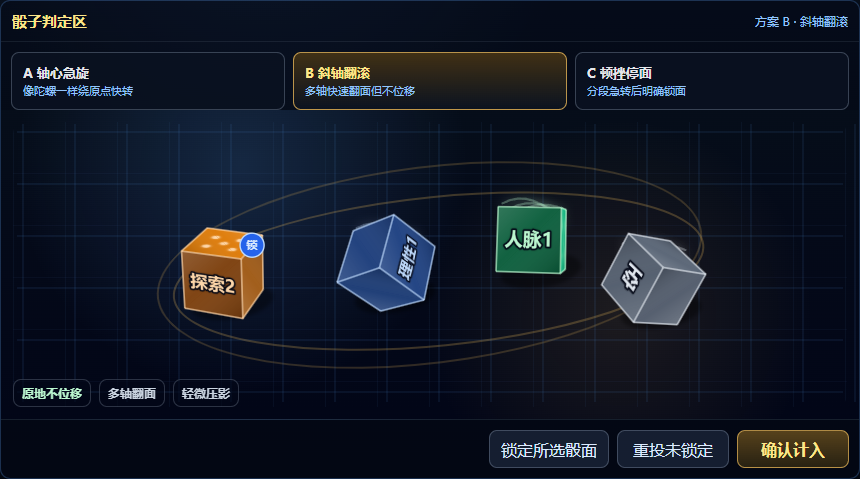
骰子分段急转，停面更明确，节奏比 A / B 更有机械感。
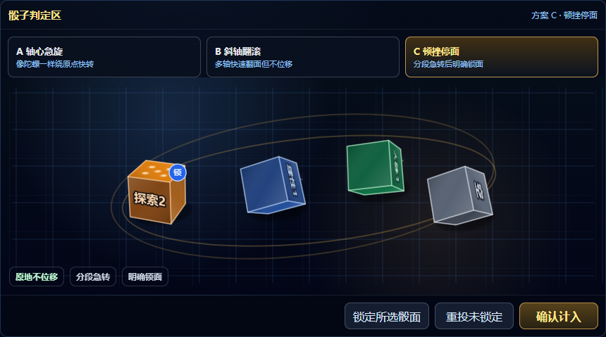
停稳后骰面贴图、实体面和文字可读性保持正常。
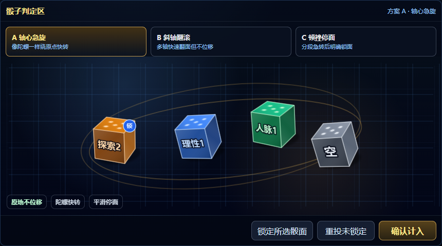
按用户偏好保留方案 B 的斜轴翻滚方向，但把节奏改成更接近方案 A：更快、更短、更快停稳。
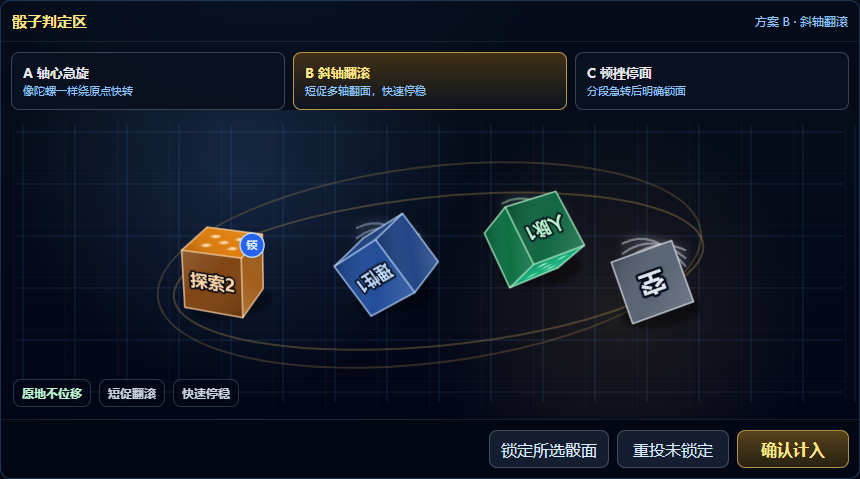
停稳后仍保留不透明实体骰和面贴图可读性。
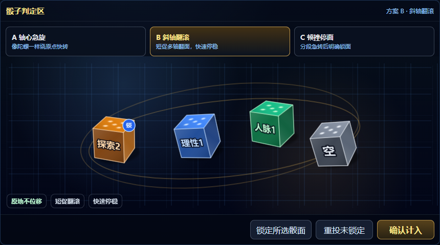
按最新方向保留方案 A 的速率、加减速度、短摇动和快速停止，只把单轴 / 横轴旋转改成无序多轴原地旋转。
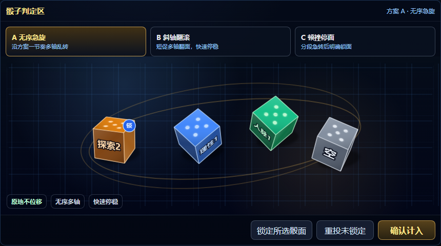
停稳后检查骰面仍是不透明实体面，文字和点数继续作为面贴图随面投影。
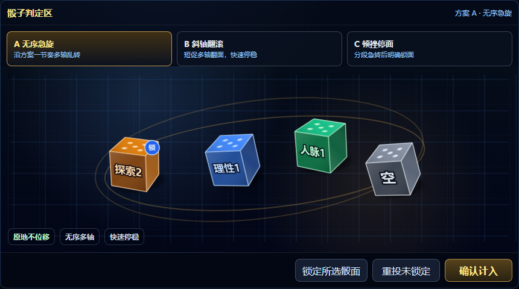
回到原来的方案一：沿纵轴单向快转，保留原速率、加减速度、短摇动和停稳曲线。
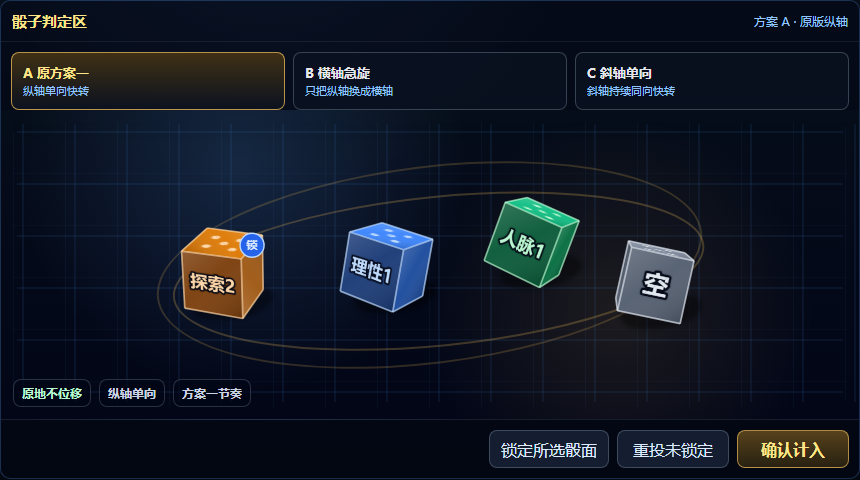
只把方案一的纵轴旋转换成横轴旋转，其余节奏参数保持一致。
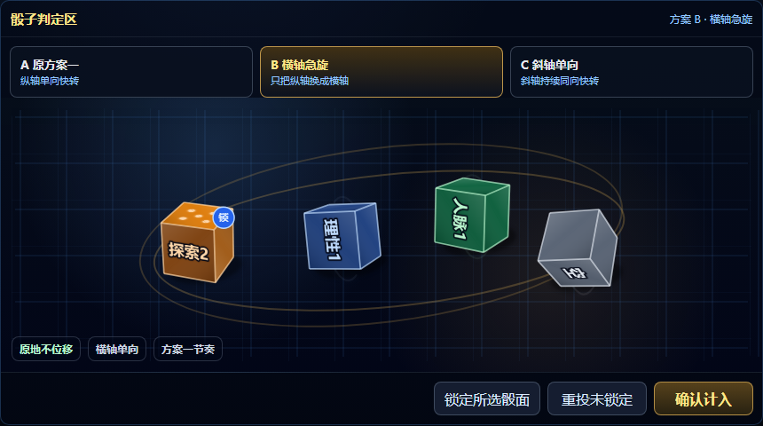
斜轴持续同向快转，不做来回晃或分段顿挫。
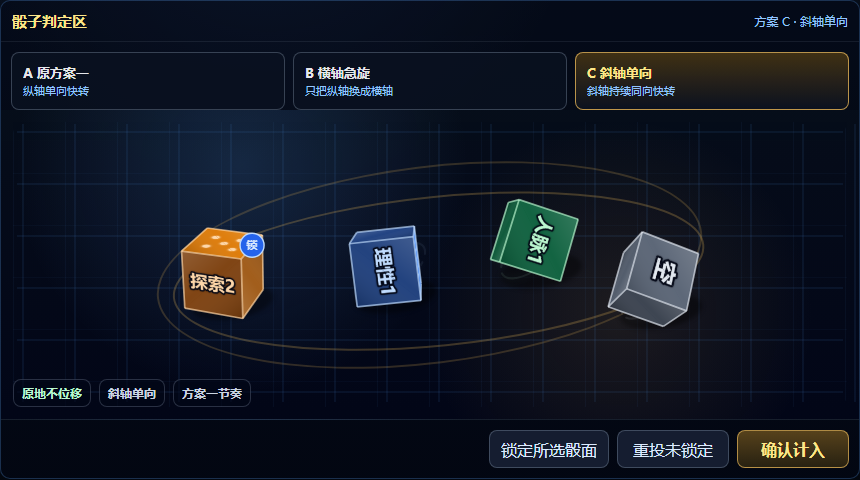
停稳后检查骰面仍是不透明实体面，文字和点数继续作为面贴图随面投影。
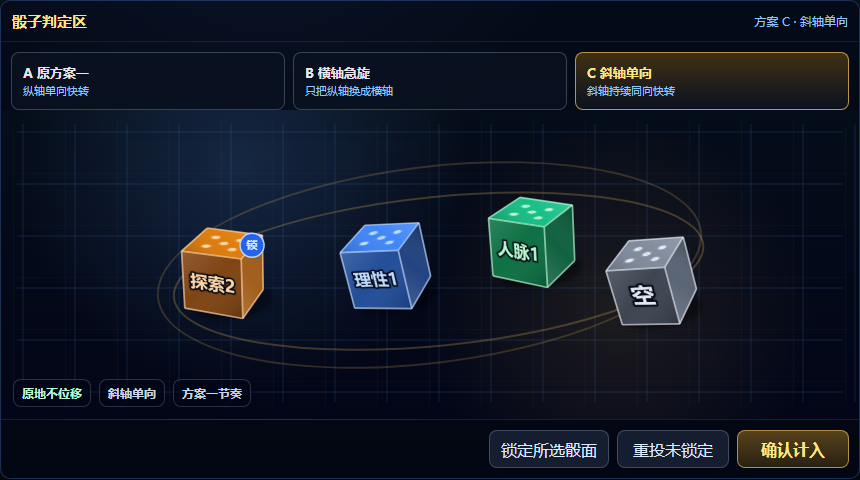
新增 D 方案的前段仍按原方案一纵轴单向快转。
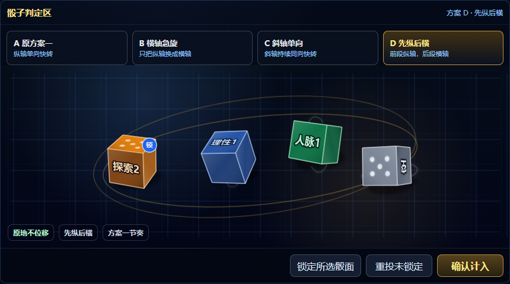
同一轮旋转后段切到横轴单向快转，节奏仍沿用方案一。
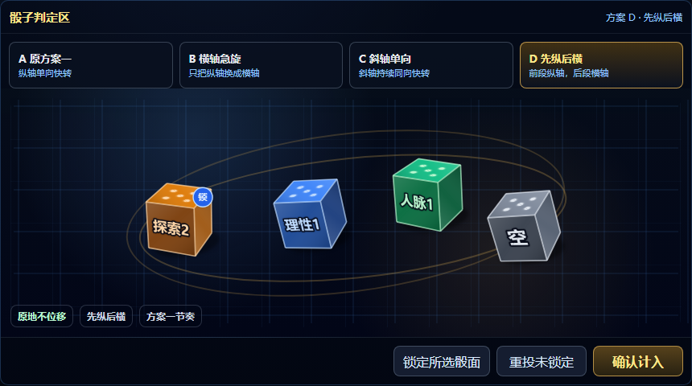
停稳后检查骰面仍是不透明实体面，文字和点数继续作为面贴图随面投影。